Abstract
The synthesis of inductive loop invariants remains a critical bottleneck in automated program verification. While Large Language Models (LLMs) show promise in mitigating this issue, they often fail on complex programs, producing invariants that are invalid or computationally ineffective. Although fine-tuning is a natural strategy to address these limitations, obtaining high-quality training data remains an open challenge. We first formalize the properties required for a high-quality training invariant, and then present Wonda, a rigorous data curation pipeline that extracts such invariants from raw verifier output via AST-based normalization followed by LLM-driven semantic rewriting and augmentation with provable quality guarantees. Fine-tuning Small Language Models (SLMs) on Wonda-curated data yields consistent gains across the Qwen3, Llama-3.1, and Mistral families: the 4B and 8B Qwen3 models nearly double invariant correctness and double speedup rates, while Llama-3.1-8B triples both. On the challenging InvBench suite, the same 4B model outperforms an off-the-shelf model 20× its size and matches the end-to-end verification time of GPT-OSS-120B, while a 14B Qwen3 model matches that of the frontier model GPT-5.2, all without test-time compute overhead.
Why Not Raw Verifier Output?
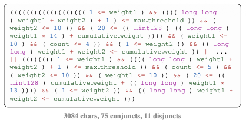
UAutomizer-generated invariants are often correct but verbose, cluttered, and poor training targets.
Fine-tuning on invariants produced by symbolic verifiers such as UAutomizer is a natural way to specialize language models for invariant synthesis. In practice, however, this strategy often fails on hard benchmarks. Raw UAutomizer outputs tend to be syntactically noisy, verifier-specific, and pedagogically weak: they enumerate many disjuncts instead of exposing compact structure that a model can learn to reproduce.
We argue that data quality, rather than model scale alone, is the key bottleneck. Wonda addresses this by curating verifier output into training invariants that are correct, useful for verification, and compact enough to serve as effective supervision.
What Makes a Good Training Invariant?
We formalize four properties that a high-quality training invariant should satisfy:
- Non-degeneracy: exclude trivial formulas (
TRUE,FALSE). - Correctness: the invariant holds at the loop location on all relevant executions.
- Usefulness: using the invariant speeds up verification relative to the baseline verifier.
- Compactness: a succinct syntactic form that is easier for a model to learn and generalize from.
Wonda’s grading function G ∈ {0, 1, 2, 3} scores each candidate using formal V1 (correctness) and V2 (sufficiency) checks. Only candidates with G ≥ 2 enter the training set.
Example: Simplifying Verbose Invariants
The figures below show concrete V0 → V1 → V2 transformations produced by Wonda. AST normalization removes syntactic noise; LLM simplification rewrites verbose disjunctive forms into compact closed-form expressions that are easier to learn.
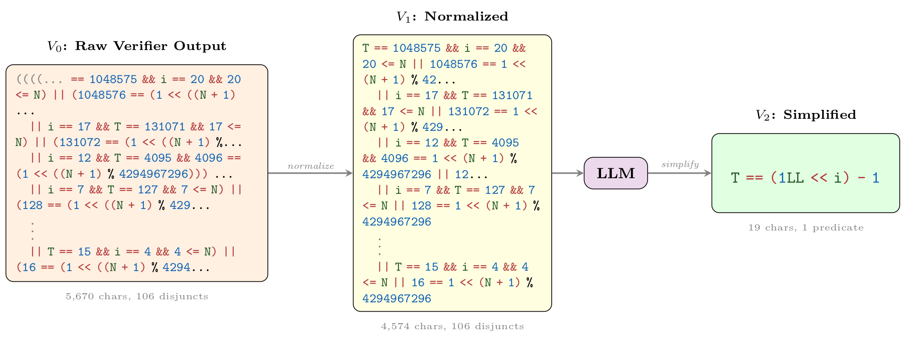
Wonda pipeline on 2148_1.c. The raw verifier output
(V0) is normalized (V1); the LLM then states the bitwise-accumulation closed
form and drops redundant modulo constraints (V2): T == (1LL << i) - 1, a
298× character reduction with 1.5× verification speedup.
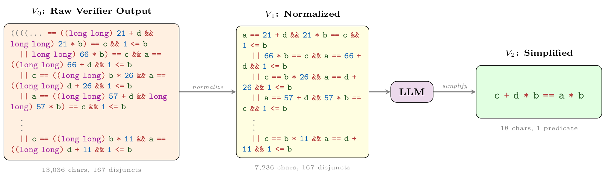
Wonda pipeline on 2383_1.c. The raw verifier output
(V0) is normalized (V1); the LLM then collapses repeated multiply-by-addition
cases into a work-remaining identity (V2): c + d * b == a * b, a 724×
character reduction with 15.1× verification speedup.
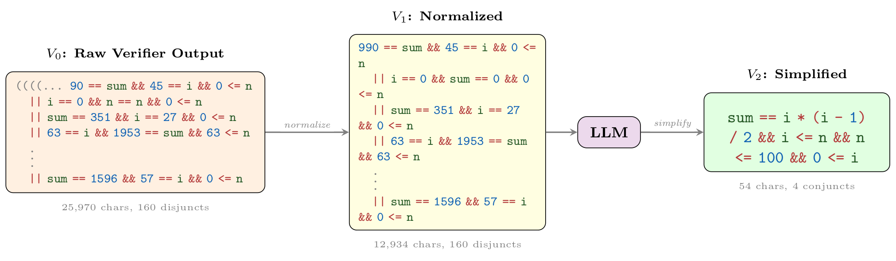
Wonda pipeline on 2456_3.c. The raw verifier output
(V0) is normalized (V1); the LLM then extracts the triangular-number closed form
and keeps only necessary loop bounds (V2):
sum == i * (i - 1) / 2 && i <= n && n <= 100 && 0 <= i,
a 481× character reduction with 5.1× verification speedup.
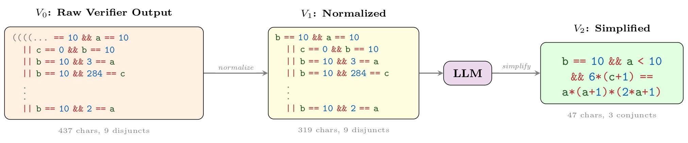
Wonda pipeline on 2686_1.c. The raw verifier output
(V0) is normalized (V1); the LLM then replaces per-value case enumeration with a
sum-of-squares closed form (V2):
b == 10 && a < 10 && 6*(c+1) == a*(a+1)*(2*a+1), a 9× character
reduction with verified correct & sufficient.
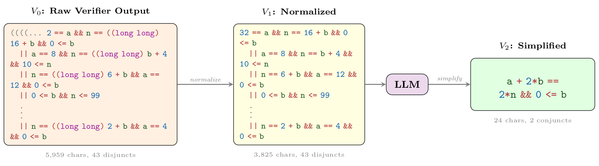
Wonda pipeline on 274_1.c. The raw verifier output
(V0) is normalized (V1); the LLM then captures the loop's fixed linear update
law and a needed non-negativity bound (V2):
a + 2*b == 2*n && 0 <= b, a 248× character reduction with
12.5× verification speedup.
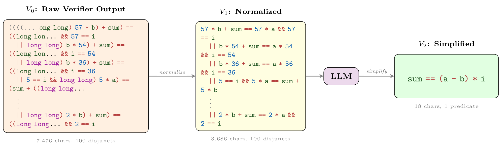
Wonda pipeline on 2953_2.c. The raw verifier output
(V0) is normalized (V1); the LLM then generalizes enumerated accumulation steps
to a single linear counter law (V2): sum == (a - b) * i, a 415× character
reduction with 7.2× verification speedup.
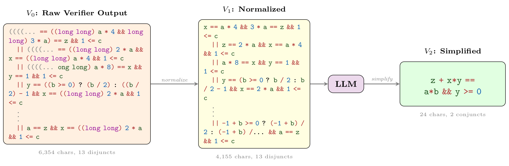
Wonda pipeline on 3917_3.c. The raw verifier output
(V0) is normalized (V1); the LLM then compresses Russian-peasant-multiplication
cases into one preserved product identity (V2):
z + x*y == a*b && y >= 0, a 265× character reduction with
2.8× verification speedup.
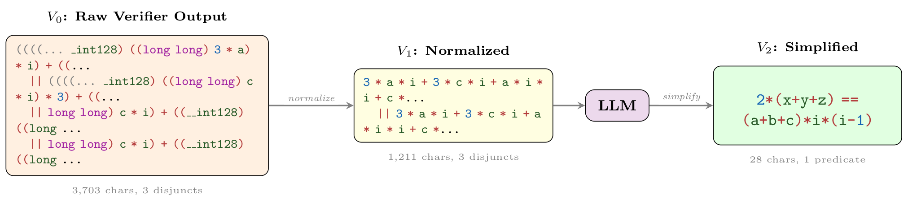
Wonda pipeline on 4828_1.c. The raw verifier output
(V0) is normalized (V1); the LLM then removes inert conditional branches and
states the combined accumulation in linear form (V2):
2*(x+y+z) == (a+b+c)*i*(i-1), a 132× character reduction with 35.9×
verification speedup.
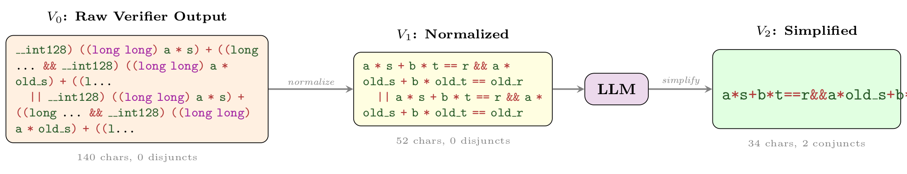
Wonda pipeline on 4992_5.c. The raw verifier output
(V0) is normalized (V1); the LLM then keeps the essential B'ezout linear
combinations with minor syntactic compaction (V2):
a*s+b*t==r&&a*old_s+b*old_t==old_r, a 4× character reduction with verified
correct & sufficient.
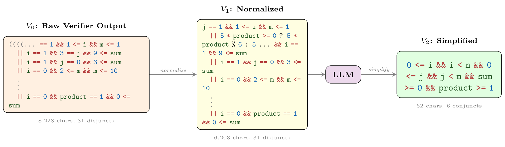
Wonda pipeline on 5066_1.c. The raw verifier output
(V0) is normalized (V1); the LLM then drops overfitted case constraints and
keeps core loop-bound and sign facts (V2):
0 <= i && i < n && 0 <= j && j < m && sum >= 0 && product >= 1,
a 133× character reduction with 2.6× verification speedup.
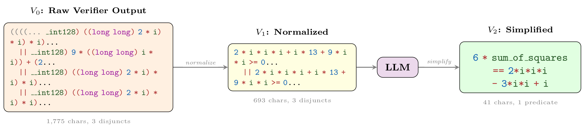
Wonda pipeline on 6732_1.c. The raw verifier output
(V0) is normalized (V1); the LLM then eliminates floor-division artifacts in
favor of an exact polynomial sum-of-squares identity (V2):
6 * sum_of_squares == 2*i*i*i - 3*i*i + i, a 43× character reduction with
20.4× verification speedup.
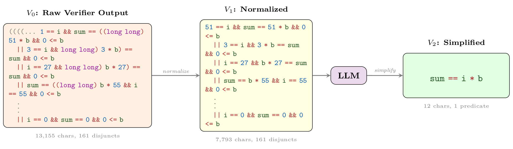
Wonda pipeline on 6858_1.c. The raw verifier output
(V0) is normalized (V1); the LLM then replaces 161 case-specific disjuncts with
the linear accumulation law (V2): sum == i * b, a 1096× character reduction
with 30.2× verification speedup.
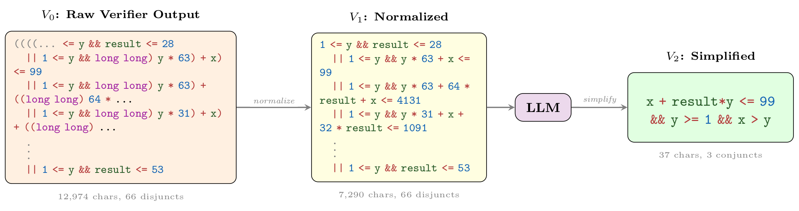
Wonda pipeline on 7158_1.c. The raw verifier output
(V0) is normalized (V1); the LLM then unifies case-specific bounds into one
preserved linear combination (V2):
x + result*y <= 99 && y >= 1 && x > y, a 351× character
reduction with 21.8× verification speedup.
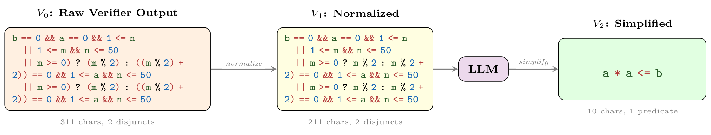
Wonda pipeline on 7241_1.c. The raw verifier output
(V0) is normalized (V1); the LLM then removes constant and parity constraints
that are unnecessary for the target property (V2): a * a <= b, a 31×
character reduction with verified correct & sufficient.
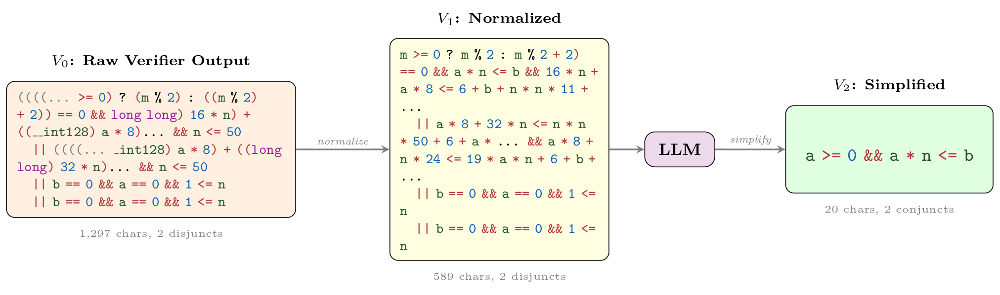
Wonda pipeline on 7241_2.c. The raw verifier output
(V0) is normalized (V1); the LLM then merges parity-based case splits into a
single linear inequality (V2): a >= 0 && a * n <= b, a 65×
character reduction with 4.3× verification speedup.
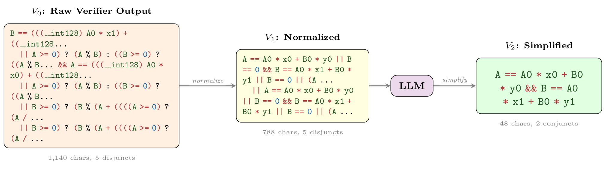
Wonda pipeline on 7321_1.c. The raw verifier output
(V0) is normalized (V1); the LLM then states the extended-Euclidean B'ezout
linear equalities without redundant cases (V2):
A == A0 * x0 + B0 * y0 && B == A0 * x1 + B0 * y1, a 24× character reduction with
26.1× verification speedup.
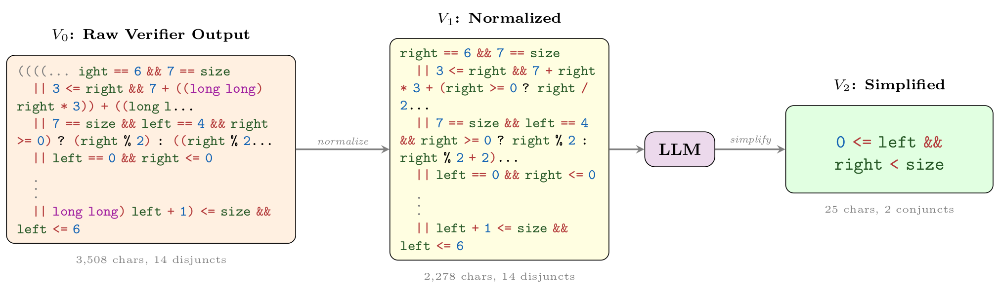
Wonda pipeline on 7861_1.c. The raw verifier output
(V0) is normalized (V1); the LLM then removes size-specific overfitting and
keeps valid binary-search index bounds (V2):
0 <= left && right < size, a 140× character reduction with
5.3× verification speedup.
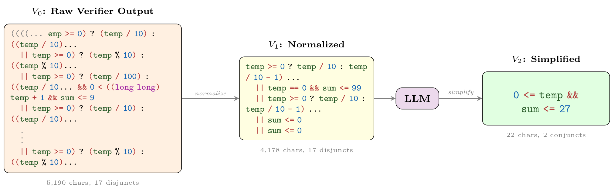
Wonda pipeline on 8353_1.c. The raw verifier output
(V0) is normalized (V1); the LLM then bounds the digit-sum loop using the input
magnitude and non-negativity (V2): 0 <= temp && sum <= 27, a
236× character reduction with 1.2× verification speedup.
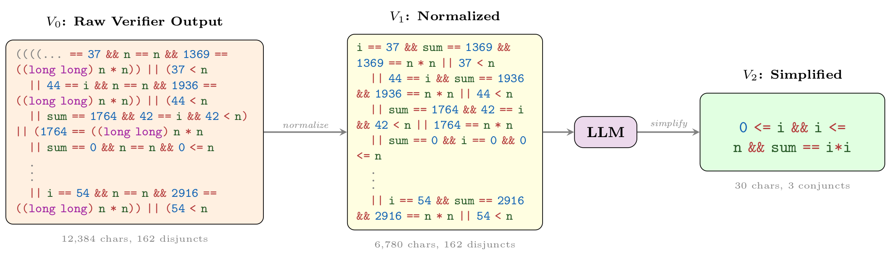
Wonda pipeline on 8694_1.c. The raw verifier output
(V0) is normalized (V1); the LLM then recognizes the sum-of-odd-integers pattern
and states the i^2 closed form (V2):
0 <= i && i <= n && sum == i*i, a 413× character reduction with
22.5× verification speedup.
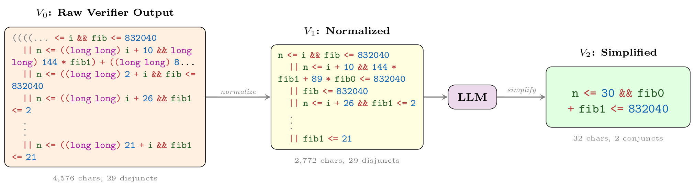
Wonda pipeline on 905_1.c. The raw verifier output
(V0) is normalized (V1); the LLM then drops redundant Fibonacci case bounds
while keeping the needed growth limit (V2):
n <= 30 && fib0 + fib1 <= 832040, a 143× character reduction with verified
correct & sufficient.
Main Results
| Model | Rvalid (%) | Rcorrect (%) | Rspeedup (%) | S̄>1 (×) | VBP ↓ (s) | VBPE2E ↓ (s) | Solved |
|---|---|---|---|---|---|---|---|
| GPT-5.2 | 94.0 ± 1.7 | 72.4 ± 2.2 | 37.1 ± 1.2 | 10.7 ± 0.4 | 155.6 ± 3.0 | 163.4 ± 3.0 | 3, 2, 3 |
| GPT-OSS-120B | 92.1 ± 1.2 | 58.0 ± 1.2 | 27.4 ± 2.9 | 7.0 ± 1.4 | 165.8 ± 5.6 | 167.6 ± 5.7 | 3, 2, 1 |
| Qwen3-80B | 97.8 ± 0.5 | 38.8 ± 1.7 | 21.4 ± 1.2 | 9.5 ± 1.0 | 169.5 ± 2.1 | 169.7 ± 2.1 | 4, 3, 3 |
| Qwen3-14B | 96.5 ± 0.5 | 36.3 ± 1.9 | 13.6 ± 2.0 | 7.6 ± 0.9 | 183.2 ± 1.2 | 183.6 ± 1.1 | 1, 2, 1 |
| Qwen3-14B-V2 (Ours) | 100.0 ± 0.0 | 43.4 ± 4.9 | 18.4 ± 4.2 | 16.0 ± 3.3 | 162.1 ± 8.3 | 162.9 ± 8.1 | 4, 4, 2 |
| Qwen3-8B (Base) | 89.4 ± 7.8 | 23.8 ± 3.1 | 10.8 ± 0.5 | 8.5 ± 5.2 | 181.6 ± 4.3 | 181.7 ± 4.2 | 0, 0, 3 |
| Qwen3-8B-V2 (Ours) | 100.0 ± 0.0 | 42.8 ± 4.6 | 21.7 ± 1.7 | 10.7 ± 2.3 | 166.5 ± 4.3 | 166.7 ± 4.3 | 2, 1, 4 |
| Qwen3-4B (Base) | 99.2 ± 0.0 | 22.8 ± 2.2 | 11.1 ± 0.9 | 8.9 ± 2.5 | 185.6 ± 2.4 | 185.7 ± 2.4 | 1, 0, 1 |
| Qwen3-4B-V2 (Ours) | 100.0 ± 0.0 | 44.4 ± 2.3 | 24.7 ± 1.2 | 12.4 ± 2.2 | 165.5 ± 3.2 | 165.7 ± 3.2 | 3, 2, 2 |
| Qwen3-0.6B (Base) | 88.3 ± 0.5 | 28.5 ± 2.8 | 12.2 ± 2.2 | 5.3 ± 3.3 | 182.9 ± 5.7 | 183.0 ± 5.7 | 2, 0, 1 |
| Qwen3-0.6B-V2 (Ours) | 99.7 ± 0.5 | 27.9 ± 0.5 | 14.1 ± 2.5 | 8.5 ± 3.1 | 174.0 ± 5.6 | 174.1 ± 5.6 | 2, 2, 1 |
| Llama3.1-8B (Base) | 96.2 ± 1.2 | 14.9 ± 1.7 | 5.4 ± 2.0 | 3.7 ± 1.4 | 186.3 ± 5.1 | 186.4 ± 5.1 | 1, 0, 2 |
| Llama3.1-8B-V2 (Ours) | 99.7 ± 0.5 | 45.5 ± 1.4 | 18.4 ± 2.5 | 11.3 ± 2.1 | 168.9 ± 7.6 | 169.2 ± 7.5 | 3, 2, 4 |
| Mistral-7B (Base) | 93.8 ± 0.9 | 18.4 ± 2.0 | 7.3 ± 1.4 | 6.7 ± 3.6 | 186.7 ± 1.5 | 186.9 ± 1.5 | 0, 0, 0 |
| Mistral-7B-V2 (Ours) | 99.5 ± 0.9 | 31.4 ± 0.5 | 16.0 ± 0.5 | 17.0 ± 0.9 | 169.0 ± 4.3 | 169.4 ± 4.3 | 2, 1, 4 |
Highlights
- Wonda V2 fine-tuning roughly doubles correctness and speedup rates for Qwen3-4B/8B.
- Llama3.1-8B-V2 triples both vs. base.
- Qwen3-14B-V2 matches GPT-5.2 on end-to-end VBP.
- Qwen3-4B/8B-V2 match GPT-OSS-120B on end-to-end VBP despite lower correctness.
- At 4B scale, Wonda nearly matches a model 20× larger with no test-time overhead.
WONDA Pipeline Ablation
| Model | Rvalid (%) | Rcorrect (%) | Rspeedup (%) | S̄>1 (×) | VBP ↓ (s) | VBPE2E ↓ (s) |
|---|---|---|---|---|---|---|
| Qwen3-8B (Base) | 89.4 ± 7.8 | 23.8 ± 3.1 | 10.8 ± 0.5 | 8.5 ± 5.2 | 181.6 ± 4.3 | 181.7 ± 4.2 |
| Qwen3-8B-V0 | 88.1 ± 3.9 | 29.9 ± 3.4 | 11.5 ± 1.9 | 9.4 ± 2.6 | 180.0 ± 2.7 | 180.6 ± 2.7 |
| Qwen3-8B-V1 | 97.0 ± 0.9 | 30.1 ± 0.8 | 13.0 ± 2.2 | 9.1 ± 1.9 | 175.3 ± 3.2 | 175.5 ± 3.2 |
| Qwen3-8B-V2 (Ours) | 100.0 ± 0.0 | 42.8 ± 4.6 | 21.7 ± 1.7 | 10.7 ± 2.3 | 166.5 ± 4.3 | 166.7 ± 4.3 |
| Qwen3-4B (Base) | 99.2 ± 0.0 | 22.8 ± 2.2 | 11.1 ± 0.9 | 8.9 ± 2.5 | 185.6 ± 2.4 | 185.7 ± 2.4 |
| Qwen3-4B-V0 | 81.3 ± 0.8 | 29.3 ± 3.5 | 13.6 ± 1.9 | 10.1 ± 1.5 | 177.5 ± 1.5 | 177.7 ± 1.5 |
| Qwen3-4B-V1 | 97.6 ± 1.4 | 33.1 ± 2.3 | 12.7 ± 2.3 | 11.4 ± 2.9 | 174.2 ± 4.7 | 174.4 ± 4.7 |
| Qwen3-4B-V2 (Ours) | 100.0 ± 0.0 | 44.4 ± 2.3 | 24.7 ± 1.2 | 12.4 ± 2.2 | 165.5 ± 3.2 | 165.7 ± 3.2 |
| Qwen3-0.6B (Base) | 88.3 ± 0.5 | 28.5 ± 2.8 | 12.2 ± 2.2 | 5.3 ± 3.3 | 182.9 ± 5.7 | 183.0 ± 5.7 |
| Qwen3-0.6B-V0 | 85.9 ± 2.6 | 18.7 ± 0.8 | 8.9 ± 0.8 | 11.7 ± 9.4 | 178.0 ± 2.7 | 178.1 ± 2.7 |
| Qwen3-0.6B-V1 | 97.6 ± 1.4 | 23.3 ± 1.2 | 9.8 ± 2.2 | 15.3 ± 0.9 | 174.4 ± 4.4 | 174.5 ± 4.4 |
| Qwen3-0.6B-V2 (Ours) | 99.7 ± 0.5 | 27.9 ± 0.5 | 14.1 ± 2.5 | 8.5 ± 3.1 | 174.0 ± 5.6 | 174.1 ± 5.6 |
| Llama3.1-8B (Base) | 96.2 ± 1.2 | 14.9 ± 1.7 | 5.4 ± 2.0 | 3.7 ± 1.4 | 186.3 ± 5.1 | 186.4 ± 5.1 |
| Llama3.1-8B-V0 | 88.9 ± 0.5 | 31.2 ± 2.0 | 14.9 ± 0.9 | 9.3 ± 3.1 | 175.0 ± 2.5 | 175.4 ± 2.5 |
| Llama3.1-8B-V1 | 99.7 ± 0.5 | 36.3 ± 5.4 | 14.1 ± 3.7 | 15.3 ± 3.4 | 170.0 ± 3.5 | 170.4 ± 3.5 |
| Llama3.1-8B-V2 (Ours) | 99.7 ± 0.5 | 45.5 ± 1.4 | 18.4 ± 2.5 | 11.3 ± 2.1 | 168.9 ± 7.6 | 169.2 ± 7.5 |
| Mistral-7B (Base) | 93.8 ± 0.9 | 18.4 ± 2.0 | 7.3 ± 1.4 | 6.7 ± 3.6 | 186.7 ± 1.5 | 186.9 ± 1.5 |
| Mistral-7B-V0 | 68.8 ± 2.0 | 17.1 ± 4.3 | 6.5 ± 2.8 | 16.8 ± 2.3 | 179.1 ± 7.7 | 179.4 ± 7.7 |
| Mistral-7B-V1 | 95.9 ± 1.6 | 24.9 ± 0.9 | 10.0 ± 3.8 | 14.3 ± 2.8 | 175.4 ± 6.4 | 175.9 ± 6.2 |
| Mistral-7B-V2 (Ours) | 99.5 ± 0.9 | 31.4 ± 0.5 | 16.0 ± 0.5 | 17.0 ± 0.9 | 169.0 ± 4.3 | 169.4 ± 4.3 |
Highlights
- V0: raw UAutomizer output → V1: AST normalization → V2: full Wonda pipeline.
- Each stage helps, but V2 is best per model family. V0 can sometimes hurt performance for Mistral-7B and Qwen3-0.6B.
- Largest gains on correctness, speedup rate, and verification time across Qwen3, Llama3.1-8B, and Mistral-7B.
BibTeX
@article{pinto2026wonda,
title={Not All Invariants Are Equal: Curating Training Data to Accelerate Program Verification with SLMs},
author={Pinto, Ido and Elboher, Yizhak Yisrael and Wu, Haoze and Narodytska, Nina and Katz, Guy},
journal={arXiv preprint arXiv:2603.15510},
year={2026},
note={Accepted to ICML 2026}
}